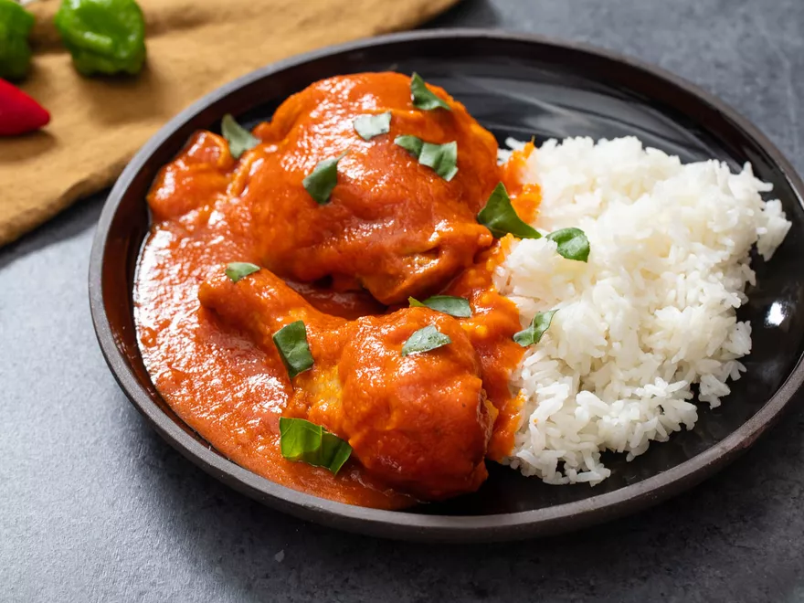

ODIN'S OBE ATA RECIPE

Description
Nigerian obe ata is so many things that it can be hard to define. At its heart, it's a sauce
that can be used as a base for soups, stews, and braises that feature all sorts of meats,
vegetables, and even eggs. But it can also be cooked down until it grows thick and spreadable,
at which point it can be used as a condiment or a dip.
This recipe, adapted from two different recipes from chefs Simileoluwa Adebajo and Esther
Ikuru, presents a baseline method for making the basic sauce, which can then be served with
various meats like a stew or cooked down into a condiment for dipping.
Its main ingredients are red bells peppers along with hot fresh chili peppers like habaneros (or
Scotch bonnets), tomato, onion, garlic, and more. Beyond that, other decisions for flavoring the
sauce are up to you. You can use more or less red palm oil to stain it a deeper maroon color and
give it an earthier, sweeter flavor; you can add flavorings like Nigerian curry powder, fresh
ginger, and ground Cameroon chilies, which are both spicy and smoky; you can even choose
whether to make it a totally smooth purée or leave it chunkier for some texture.
If you serve it as a stew, you have just as much flexibility with what you put in the stew and how
much you use of it. This recipe makes a large quantity of sauce, so you can divide it up and use
it in different ways. Try briefly simmering cooked chicken in it (as the recipe below suggests), or
try turkey, beef, lamb, or goat—cooked tripe is a popular option, too!. Hardboiled eggs can be
shelled and gently simmered in the sauce as well. Lots of vegetables, like sweet potatoes and
greens, can be cooked in the sauce for a vegetarian option.
As a dip, it's great with plantain chips or with fufu (a starchy dish made from pounded and
boiled cassava root and green plantains).
The best thing is to make a big batch and get creative: obe ata offers a world of serving possibilities.
Ingredients
- 8 red bell peppers (about 4 1/2 pounds; 2kg), stemmed, cored, and cut into roughly 1/2-inch dice
- 9 tablespoons (135ml) red palm oil, divided
- Kosher salt
- 12 medium cloves garlic (about 1 head), roughly chopped
- 6 large plum tomatoes (about 1 3/4 pounds; 800g), cored and quartered
- 4 Fresno chili peppers (about 2 ounces; 55g), stemmed, seeded, and cut into roughly 1/2-inch dice (see note)
- 4 habanero or Scotch bonnet peppers (about 1 ounce; 30g), stemmed, seeded, and cut into roughly 1/2-inch dice (see note)
- 2 large red onions (about 1 3/4 pounds; 800g), peeled and cut into roughly 1/2-inch dice
- One 2-inch segment peeled fresh ginger (about 3/4 ounce; 20g), roughly chopped
- 1 quart (1L) homemade chicken stock or store-bought, low-sodium broth, or vegetable stock
- 9 tablespoons (135ml) canola or other neutral oil
- 1/2 teaspoon Nigerian curry powder, such as Lion's Brand, or more to taste (optional, see note)
- Ground Cameroon pepper, to taste (see note)
- 4 pounds (1.8kg) cooked bone-in chicken (optional)
- Torn fresh basil leaves, for garnish (optional)
Steps
- Preheat oven to 400°F (200°C) and set oven racks in the top- and bottom-third positions.
Line two rimmed baking sheets with parchment paper.
- In a large bowl, toss red bell pepper with 2 tablespoons (30ml) palm oil. Season with salt.
Transfer in an even layer to one of the rimmed baking sheets. In the same large bowl, toss the garlic,
tomato, Fresno chili, habanero, onion, and ginger with 4 tablespoons (60ml) palm oil. Season with salt.
Transfer in an even layer to the other rimmed baking sheet.
- Roast the vegetables, stirring and rotating baking sheets once or twice during cooking, until all are tender,
some of their juices have cooked off, and they are charred in spots, about 45 minutes for the red bell peppers
and 30 minutes for the tomatoes, chilies, and onions.
- Scrape all of the roasted vegetables into a blender jar and blend until either a chunky or smooth purée forms (the
consistency of your obe ata is up to you; we like a smoother sauce for when it is used for stews and a chunkier one
when it is used as a dip or condiment).
- Transfer vegetable purée to a Dutch oven. Stir in chicken stock, remaining 3 tablespoons (45ml) palm oil, canola oil,
curry powder, and Cameroon pepper. Bring to a simmer. Season lightly with salt, then simmer until sauce is reduced to a
good stew-like thickness that can coat pieces of meat well, about 1 hour. If desired, season with additional curry powder and/or
Cameroon pepper to meet your desired flavor and spice level.
- If serving with chicken, add cooked chicken to the Dutch oven and simmer until chicken is warmed through, about 15 minutes.
Serve with warm rice and garnish with torn basil leaves, if desired.
- Alternatively, you can continue to cook down the sauce until it thickens to a dip-like consistency, about 3 hours;
the oils will break from the sauce in this time and fry the vegetable purée, deepening its flavor further.
Up, up, and away!